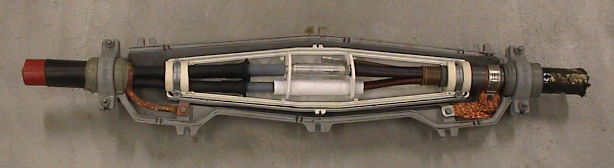

Chapter 4 describes the most commonly used components in the medium-voltage (MV) and low-voltage (LV) networks. These include cables, joints, transformers, reactors, circuit breakers, switchgear, and fuses.
The main components in medium-voltage (MV) and low-voltage (LV) networks are cables, transformers, and switchgear. Overhead lines are almost non-existent at these voltage levels in the Netherlands and are therefore not covered. This chapter provides an overview of these most commonly used components. The modeling and behavior in load flow and short-circuit calculations will be discussed in later chapters.
Cables are available in many types and configurations. All cables consist of 1, 3, or 4 cores (conductors with insulation), a shielding, and an outer sheath. Depending on the voltage level and application, there are significant differences in the construction of the cable. This chapter covers the most commonly used cables for low-voltage distribution networks and medium-voltage transport and distribution networks.
In the MV networks, cables with three conductors are usually used. A conductor consists of a copper or aluminum conductor, which is surrounded by a conductor screen, insulation, and a conductor shield.

The conductor can be composed of multiple small cross-section wires, which are compactly 'stranded' into a thick conductor of the desired cross-section. If the conductor is made of aluminum, it is often 'solid' with a single conductor of the desired cross-section. Due to flexibility, solid conductors in three-core cables are used up to a conductor cross-section of 240 mm.2applied. In single-core cables, solid conductors are used up to a conductor cross-section of 800 mm.2applied. For larger conductor cross-sections, stranded conductors are used.
The conductor screen and the insulation screen are applied in cables for medium voltage (MV) level and higher to evenly distribute the electric field in the insulation. Irregularities can occur on the conductor or the shielding, causing the electric field to become locally quite large. This can cause small discharges, leading to rapid aging of the cable. To eliminate these irregularities, a screen consisting of a semiconductive layer is applied around the conductor and the insulation, ensuring the field is evenly distributed within the insulation. The thus insulated conductors are called cores, and these are twisted together into three compactly bundled cores.
The twisted cores are shielded with a screen that is capable of carrying small equalizing currents for extended periods and short-circuit currents for brief periods.
The most commonly used types have mass-impregnated paper insulation or plastic insulation. An example of a mass-impregnated cable is the type GPLK (Armored Paper-Lead Cable) for conductor cross-sections up to 300 mm².2These cables are no longer used in modifications to the medium voltage network. Their production was stopped in 2005. Nowadays, cables with plastic insulation made of XLPE (Cross-Linked Polyethylene) are used. The main characteristics of both types are (the numbering refers to figure 4.2):
GPLK |
XLPE |
1. copper or aluminum conductors 2. core insulation (mass-impregnated) 3. belt insulation (mass-impregnated) 4. lead shielding (extruded) 5. intermediate layer of bituminized paper 6. intermediate layer of synthetic yarn or jute 7. reinforcement of galvanized steel tape 8. outer sheath of synthetic yarn or jute and bitumen or PVC or PE |
1. copper or aluminum conductors, stranded or solid 2. conductor screen (semiconductive layer) 3. cross-linked polyethylene insulation 4. conductor screen (semiconductive layer) 5. shielding of copper wires 6. swelling tape against moisture ingress 7. polyethylene or PVC outer sheath |
The GPLK cables have been widely used in the past and are still prevalent in medium voltage (MV) transport and distribution networks. The conductors in GPLK cables have insulation made up of layers of paper impregnated with a mixture of oil, resin, and wax (the mass). At high temperatures, this mixture becomes liquid, which limits the conductor temperature to 50°C to prevent damage and accelerated aging of the insulation. The conductors of GPLK cables are enclosed by a lead sheath. The cables are reinforced (armored) with galvanized steel tape and finally provided with an outer sheath.
The insulation of the cores of plastic medium-voltage cables consists of solid XLPE with a semiconducting layer on both the conductor and shielding sides. The semiconducting layer ensures field control to achieve a homogeneous electric field. Plastic cables have a copper wire screen for carrying small equalization currents and short-term short-circuit currents, and it also serves as reinforcement. Cables with XLPE insulation can be loaded up to a conductor temperature of 90°C, making these cables fairly resistant to heavy loads. However, underground XLPE cables are usually not loaded to their maximum conductor temperature for extended periods, as the outer sheath temperature would become too high, leading to soil drying. This is addressed in section 4.1.5 on current-carrying capacity. Overhead-mounted cables do not have the issue of soil drying and can be loaded to their maximum temperature. Due to the material properties of the plastic insulation, these cables are less resistant to transient overvoltages than paper-insulated cables.
Cables are described with a type designation that is composed of several codes, which are placed in a fixed order. The structure of the designation is shown in Table 4.1.
Onderdeel |
Code |
Betekenis |
Non-metallic sheath |
E V |
PE sheath PVC sheath |
Mechanical protection |
G O |
armering omvlochten |
Isolatiemateriaal |
E P V Y |
PE insulation paper insulation PVC insulation XLPE insulation (cross-linked polyethylene) |
Mantel |
LK MvK MeK |
loodmantel PVC sheath PE sheath |
Bijzonderheden |
rv h as sas lwd dlwd lqwd mb zh |
radial field hulpaders aardscherm S-shaped earth shield langswaterdicht transverse and longitudinally watertight longitudinally and quasi-transversely watertight flame-retardant sheath halogen-free |
Rated voltage |
… |
phase voltage and/or coupled voltage (kV) |
Number of cores, conductor cross-section, earth shield |
… |
cross-sections in mm2 |
Bijzonderheden of the conductor |
Al Cu rm rs svs |
aluminium koper round solid conductors round stranded conductors sector-shaped stranded conductors |
For conductor cross-sections up to 300 mm2generally, three-core cables are used. For larger conductor cross-sections, three single-core cables per circuit are usually applied. Specifically, single-core cables are used in medium voltage (MV) transmission networks and for connecting heavy industrial loads and large decentralized generation units. Common conductor cross-sections are:
Three-core distribution cable |
Transport cable single-core |
10 kV: YMeKrvaslqwd 6/10kV 3x240 Alrm as70 YMeKrvaslqwd 6/10kV 3x150 Alrm as70 YMeKrvaslqwd 6/10kV 3x95 Alrm as70 20 kV: YMeKrvaslqwd 12/20kV 3x240 Alrm as70 |
10 kV: YMeKrvaslqwd 6/10kV 1x630 Alrm as70 YMeKrvaslqwd 6/10kV 1x400 Alrm as70 20 kV: YMeKrvaslqwd 12/20kV 1x630 Alrm as70 YMeKrvaslqwd 12/20kV 1x400 Alrm as70 |
Some commonly used types of plastic cables are listed in table 4.2. These cables have round solid aluminum conductors and XLPE insulation for a rated voltage of 10 kV (6 kV phase voltage) or 20 kV (12 kV phase voltage). The cables are longitudinally and quasi-waterproof, have a radial electric field in the insulation, and have a grounding screen with a cross-section of 70 mm².2The cable is surrounded by a PE sheath. The distribution cables with conductor cross-sections up to 240 mm²2in this table are three-core and transport cables with conductor cross-sections starting from 400 mm²2single-core.
Most low-voltage cables are equipped with 4 conductors: three for the phases and one for the neutral. Approximately 40% of all low-voltage cables in the Netherlands are of the GPLK type with copper conductors. The remaining 60% consists of plastic cables with copper or aluminum conductors and plastic insulation. The most commonly used plastic cables are of the Aluminum Plastic Distribution and Connection Cable (ALKUDIA) type.
The insulation of the cores of plastic low-voltage (LV) cables consists of solid PVC or XLPE. Due to the low field strength, no semiconducting layer is needed for field control. Plastic cables have a copper wire screen for carrying equalization currents and for carrying short-term short-circuit currents. Cables with PVC insulation can be loaded up to a conductor temperature of 65°C. Cables with XLPE insulation can be loaded up to a conductor temperature of 90°C.
In many cases, the cables have a shield of copper wires that are applied in a meandering pattern over the twisted conductors: a so-called S-shaped ground shield (see figure 4.3). The advantage of the meandering is that branch and connection joints can be installed without interrupting the shield.

Common conductor cross-sections are:
Low-voltage cables are available with auxiliary cores and are therefore also called combo cables. Auxiliary cores have conductors of 2.5 or 6 mm².2cross-section and are placed between the main conductors. Figure 4.3 provides an example of a low-voltage cable with aluminum sector-shaped conductors and auxiliary cores. The auxiliary cores are visible as thin copper conductors between the thick aluminum main conductors. In practice, the auxiliary cores usually power public lighting.
The neutral conductor is necessary for carrying the return current due to the asymmetry in the three-phase load. The NEN 1010 standard allows for the use of a smaller neutral conductor in low-voltage cables, with a cross-section that is half the size of a phase conductor. This so-called half neutral is no longer used today but can still be found sporadically in old low-voltage networks (for example, 3x35/25). In a single-phase load, the current through the neutral is always as large as the current through the phase. Therefore, the same requirements should be applied to the neutral conductor as to the phase conductor. In a three-phase 50-Hz network that is symmetrically loaded and where no higher harmonic currents flow, the current through the neutral is indeed zero. In situations where the phases are asymmetrically loaded, the sum of the phase currents is not zero, and a current flows through the neutral conductor. The presence of third-order harmonic currents in the phases also results in a current through the neutral conductor because the third-order harmonic currents do not cancel each other out. This is further explained in Chapter 11 on Power Quality. The third-order harmonic current through the neutral conductor can, in some cases, be as large as the current through the phase conductors. A neutral conductor with a smaller cross-section will then not suffice.
The shields of single-core cables can be connected in various ways. For instance, the shields can be connected at one end of the circuit or at both ends. The currents through the conductors induce a voltage in each of the shields of the three cables. If these shields are connected at both cable ends, these voltages can cause equalizing currents to flow through the shields. The magnitude of these currents depends on how the shields are connected. The following configurations are possible:
Eenzijdig |
Tweezijdig |
Cross-bonding |

When connecting the shields on one side, no equalizing currents will flow because there is no closed circuit between the shields. The disadvantage is that large potential differences can arise between the shields on the other side of the cable.
A potential difference is avoided by connecting the shields on both sides. This creates a closed circuit between the shields, allowing equalizing currents to flow. The losses that occur in this process (due to induction) are not the same for the three cables of a circuit. If the cables are laid in a flat plane, the greatest losses will occur in one of the outer cables.
To eliminate the equalization currents in a two-sided connection, the circuit can be divided into three equal sections. After each section, the shields are cross-bonded with each other. This ensures that the potentials at the beginning and end of the circuit are equal, and thus no equalization currents flow.
Cables are supplied in a certain (sometimes the maximum production) length. Therefore, a longer connection can only be made with multiple lengths. If the correct lengths are provided at the time of order, in consultation with the manufacturer, 'cross bonding' leads to minimal equalization currents.
The impedance of a cable consists of resistance and reactance. The resistance is primarily determined by the diameter and material of the conductor. Additionally, the resistance depends on the conductor temperature. The reactance is calculated from the self-inductance, which depends on the conductor diameter, the diameter of the shielding, and the positioning of the cores of the three phases relative to each other. Chapter 8 on models addresses the calculation of resistance and reactance.
The R/X ratio (the ratio of resistance to reactance) affects the behavior of the network regarding load flow and during short circuits. Due to the compact construction of the cables, the self-inductance is low compared to overhead lines. As a result, the R/X ratio of cables is higher than that of overhead lines. Because medium voltage (MV) cables have thicker insulation than low voltage (LV) cables, the reactance of MV cables is greater than that of LV cables of the same conductor cross-section. Table 4.3 provides an example for some three-core LV and MV cables.
Type |
Spanning |
R (Ω/km) |
X (Ω/km) |
R/X |
50 Al |
LS |
0.64 |
0.085 |
7.5 |
150 Al |
LS |
0.21 |
0.079 |
2.6 |
50 Cu |
LS |
0.39 |
0.085 |
4.6 |
150 Cu |
LS |
0.13 |
0.063 |
2.0 |
50 Al |
MS |
0.64 |
0.105 |
6.1 |
150 Al |
MS |
0.21 |
0.093 |
2.2 |
50 Cu |
MS |
0.39 |
0.125 |
3.1 |
150 Cu |
MS |
0.13 |
0.105 |
1.2 |
The maximum current carrying capacity of a cable is calculated using the internationally recognized standard IEC 60287. The calculated value is the maximum current that can continuously flow through the cable without causing damage. The standard describes the calculation of losses in the cable and the thermal resistances of the cable and its surroundings. The method is based on heat production in the cable and the ability of this heat to be dissipated into the environment. The method is essentially the same for low voltage (LV) and medium voltage (MV) cables. The NEN 1010 standard is derived from IEC 60287 and specifically describes the current carrying capacity for LV cables.
When designing a cable connection, the electrical engineer must deal with several boundary conditions and environmental factors. For the soil where the cable will be laid, he needs to know, among other things, the soil temperature, whether there is a risk of soil drying out, the groundwater level, and the thermal resistance of the soil around the operational cable. The following points of attention affect the cable's current carrying capacity:
The thermal resistance is a measure of the environment's ability to dissipate the generated heat. The lower the thermal resistance of the soil, the better the soil dissipates the heat produced in the cable. Of all the parameters needed to calculate the maximum allowable continuous current of an underground cable, the parameter ρT, the thermal resistivity in K·m/W, of the soil is the most difficult to determine accurately. The ρT-value that must be applied is the stable value that occurs after a prolonged period of operation of the cable(s), during which the maximum allowable continuous current flows through the cable. However, this value cannot be measured in advance. The ρT-value of the 'virgin' soil before the installation of the cable(s) should be measured by specialists. Additionally, the annual variation in moisture, groundwater level, and temperature at the required depth are important. Measurements should preferably be carried out after the summer (in the northern hemisphere around mid-November), as this provides the most conservative value for ρ.Twill yield. If the 'virgin' soil where the cable is laid is not sand but, for example, consists of clay or peat, then temperature, humidity, and groundwater level are relevant. The cables should preferably be laid in compacted sand. The actual ρT-value of the compacted sand can, however, drastically differ from the previously estimated value because the amount of moisture in the sand can vary due to seasonal influences or other external factors. For instance, the moisture level can change if precipitation can no longer penetrate the cable trench or if the groundwater level changes. Vegetation in open fields can also affect the soil's moisture content.
Assuming that the cables are located in an environment where precipitation can fully penetrate the cable trench, the IEC 60287-3-1 has provided the following definitions for the relationship between moisture and thermal resistance. The values in Table 4.4 should only be used if no further information about the local conditions is available.
The IEC 60287 standard defines moisture solely by the amount of precipitation. It is assumed that the precipitation can seep through the top layer without obstruction. The influence of moisture by potentially present groundwater is rightly not mentioned by the standard, except in the data for the Netherlands: 'sub-soil water level near to cables'.
Thermal resistance K·m/W |
Bodemconditie |
Weersconditie |
0.7 |
Very moist |
Continuously moist |
1.0 |
Vochtig |
Regular rain |
2.0 |
Droog |
Rarely rain |
3.0 |
Very dry |
Little or no rain |
Globally, it is a rare exception that the depth at which the groundwater level lies affects the moisture content of the sand in the cable trench. This is because the ground level is usually much higher than sea level or higher than the level of, for example, a river/canal or a (large) lake in the vicinity. In the Sahara, the groundwater is often deeper than 25 meters. In the Netherlands, there are even places where the groundwater level is much deeper. Near Hoog-Soeren on the Veluwe, for example, a level of more than 71 meters has been measured, and in Limburg, it has once been measured at a depth of 200 meters below ground level. There are regional Dutch maps that indicate the groundwater level.
In permanently wet areas, where the groundwater level is almost permanently just below the surface, the influence of precipitation is significant. If the groundwater level is deeper, it can vary seasonally. Pumping the area can permanently lower the groundwater level. It is wise to conduct measurements locally or along the cable route and check if there are plans to change the groundwater level. For cables that are installed at a depth permanently below the groundwater level, in a well-compacted and sand-filled cable trench, the following applies: ρT≈ 0.5 K·m/W.
A rough classification of arable soil is:
Material that dries out after heating and evaporation of the present moisture and undergoes an irreversible change in permeability is not acceptable as 'bedding' material. Clay/loam and peat are therefore not suitable for use in cable trenches. Clay, for instance, gets 'baked' and then forms a water-impermeable shell around the cable (ρT≈ 7 K·m/W). Plant residues (peat) have the same property (ρT≈ 4 K·m/W).
A bedding for a cable made of composite material mixtures has thermal properties that can be well known. This is necessary for thermally heavily loaded cable routes. The only correct 'bedding' material (backfill) for the cables is clean quartz sand. This sand is the best thermal conductor of all soil minerals. The thermal resistance depends, among other things, on the composition, grain size, compactness, temperature, and moisture content. In laboratory tests (Heinhold, 1999), measurements were conducted on soil types. The measurements on dried soil resulted in thermal resistances between 1 and 4 Km/W. The ratio between the amount of large and small grains indicates the diversity in grain size. Sand with a high diversity in grain size has the lowest thermal resistance. For sand with low diversity, values above 3 Km/W were measured. Figure 4.5 shows in curves the thermal resistance of sand mixtures with high and low diversity in grain size as a function of the volume percentage of moisture. The thermal resistance of loamy sand is also shown.

Figure 4.5 also shows the levels of the relationship between moisture and thermal resistance according to Table 4.4 with dashed lines. This shows that for a humid area with regular rain, according to IEC 60287-3-1, a thermal resistance of 1 Km/W can be assumed, while the curves in Figure 4.5 indicate a more nuanced situation. For sand with low grain diversity, values between 0.5 and 1.2 Km/W can be expected, but for sand with high grain diversity, values between 1.0 and 3.8 Km/W can be expected. Therefore, it is reasonable to assume, considering the maximum outer sheath temperature and the drying effect it can have, that in the absence of specific data, a thermal resistance value of 2.5 Km/W for dried sand is preferred.
The moisture content of sand depends on the amount of rain and the amount of groundwater that can penetrate the cable bed. Table 4.5 provides an overview of the thermal resistance of sand, clay, and peat for various moisture levels. The table is derived from various tables of thermal conductivity of materials (Engineering, 2011), (De Vries, 1963). There is no consensus on the internationally used values, so the values in the table are indicative. For clarity: soil, clay, and peat are included in the table for comparison purposes only.
Materiaal |
Conditie |
Minimale ρT(K) ·m/W) |
Maximum ρT·m/W) |
Zand |
Saturated with water |
0.25 |
0.50 |
Zand |
Vochtig |
0.50 |
1.00 |
Zand |
Droog |
1.00 |
3.00 |
Zand |
Very dry |
3.00 |
6.67 |
Aarde |
Droog |
0.67 |
|
Klei |
Saturated with water |
0.40 |
1.67 |
Klei |
Vochtig |
0.56 |
6.67 |
Veen |
Saturated - moist |
0.25 |
4.00 |
Because a bed of sand remains 'porous,' evaporating moisture can potentially be replaced by precipitation and, if the groundwater level is high enough, by groundwater. Moisture can also laterally penetrate the cable trench from the existing local soil, provided the cable trench does not have closed sidewalls.
Most industrial areas are leveled with sand or are sand-filled sites. Completely backfilling the cable trench with clean sand is then not a problem. Cables installed outside industrial areas are usually in other types of soil, such as peat or clay. It is advisable to always use sand as bedding because sand has the lowest thermal resistance.
The sand can absorb a certain amount of water without changing its volume. The water only needs to fill the spaces between the sand grains. For example, if 100 liters of water pass through 1 m3sand is absorbed, it contains 10 vol % moisture. The maximum vol % moisture that can be absorbed by sand with a dry density of approximately 1700 kg/m3can be absorbed is approximately 15%.
At a given volume percentage of water, sand with a high density has a lower thermal resistance than sand with a lower density. Therefore, in addition to the grain size of the sand, compacting the wet sand after pouring is also important. With compacted sand, a lower volume percentage of moisture is sufficient to achieve the same thermal resistance as with non-compacted sand. Washing the sand with water is not a compaction method, because where there is water, there cannot be sand grains, and as the water eventually drains away, air-filled spaces remain between the sand grains.
Excavating the cable trench disturbs the soil. The bedding material in the entire cable trench usually cannot be compacted (densified) to match the originally favorable properties of the undisturbed soil. It may even be that the cable trench with bedding material has a higher thermal resistance than the original soil. Nevertheless, this method is chosen to reduce the risk of drying out the original soil material and because the new environmental conditions are thus known. More specific information can be found in the literature (Heinhold, 1999).
If the temperature at the circumference of the outer sheath of a continuously fully loaded cable at a depth of 0.7 m and with a ground temperature of 20 °C is approximately 35 °C, the evaporation process of the moisture in the sand directly around the cable begins (VDE 0298 Part 2). When only paper insulation was used, drying out problems were not an issue because the conductor temperature for paper cables was limited to 50 °C and the sheath temperature was lower than 35 °C. As a result, sand and clay could hardly dry out. With the advent of XLPE insulated cables, the sheath temperature can rise to approximately 75 °C at a maximum conductor temperature of 90 °C, which means careful attention must be paid to the risk of soil drying out.
The risk of drying out exists if the moisture evaporated around the cable sheath is not 'replaced' by other moisture. This situation can occur if:
A crossing of a cable trench with a road can result in the drying out of the sand around the cables under the road. This danger exists under any (partially) watertight covering of the trench longer than one meter. Additionally, the situation can occur where, before the installation of the cables under a layer of asphalt or concrete, the soil temperature in the summer can be 5°C or more higher than the temperature of the ground in an open field (measured at the same depth). This is due to the heating of the asphalt or concrete by solar heat.
In industrial installations, the cable trenches filled with sand and back-fill are often located between the concrete foundations for the equipment or between (expensive) lateral concrete walls. Over the cable trench, a liquid-tight and/or drivable top layer usually needs to be applied. This top layer must be able to sink along with the sand and back-fill if they settle slightly over time, despite compaction, to prevent the formation of a heat-insulating air layer.T≈ 40 K·m/W, forms between the back-fill and the applied top layer.
The risk of soil drying can be taken into account by using a sufficiently high value for the specific thermal soil resistance in the design or by calculating with a maximum outer sheath temperature of the cable. The complete drying out of an operational cable trench can take some time and only becomes apparent when it is too late. An accurate estimation of the value of ρTwith the minimum amount of moisture after prolonged operational use is therefore essential. Because, as the saying goes, a chain is only as strong as its weakest link, the worst value of ρTin the route is decisive for the entire cable circuit.
The soil temperature has a significant impact on cable load capacity. The temperature is influenced by various heat-producing sources present in the ground, such as parallel circuits and heating pipes. Seasonal influences, such as summer and winter conditions, should also not be neglected. Seasonal influence can cause up to a 10-degree difference in soil temperature.
The maximum load of the cables is limited on one hand by the maximum temperature that the insulation allows and on the other hand by the drying out of the soil around the cable. In the Netherlands, the soil can dry out at a conductor temperature of 50 °C and higher. For GPLK cables, the insulation material limits the conductor temperature to 50 °C. The outer sheath then has a lower temperature, so the risk of soil drying out with these cables is not significant. These cables can therefore be loaded nominally. Due to the negative impact on lifespan, temporary overloading of these cables is avoided. XLPE cables allow higher insulation temperatures than GPLK cables. The maximum allowable conductor temperature for these cables is 90 °C. This high temperature poses a significant risk of soil drying out. Soil drying is an irreversible process, which changes the thermal properties of the soil. The thermal soil resistance increases, resulting in the cable permanently dissipating its heat less effectively. Therefore, the conductor temperature is limited by setting requirements for the maximum outer sheath temperature to prevent soil drying. XLPE cables thus have a margin in load capacity. Due to the slow heating process, temporary overloading is allowed in specific circumstances. For example, the load capacity of a three-core XLPE cable with 95 mm2copper conductors given. The cable is buried at a depth of 1 meter in soil with a thermal resistance of 1 Km/W and an ambient temperature of 15 °C. Under these conditions, this cable, assuming a conductor temperature of 90 °C, can carry a continuous current of up to 305 A. The temperature of the outer sheath will then be 61 °C. At this temperature, the soil around the cable will dry out. To prevent this, the temperature of the outer sheath can be limited to 45 °C. In that case, the maximum allowable continuous current is 255 A. Based on this current value, the cable has a margin for temporary loads of 50 A. If a temporary overload is allowed, the load on this cable, according to the IEC 60853 standard, can even be increased from 255 A to 348 A for two hours or from 255 A to 339 A for five hours under these conditions.
With the environmental factors described in this paragraph, the load capacity of a cable can be precisely calculated using the internationally recognized standard IEC 60287 (Phase, 2006). However, it is not always easy to obtain the necessary parameters. Cable manufacturers specify the load capacity of cables for nominal conditions and provide correction factors for deviations in temperatures and installation conditions from the nominal values. The NEN 1010 standard also uses correction factors.
Network designers often use company-specific guidelines that are largely derived from methods that work with correction factors to calculate the nominal current for any desired situation. Additionally, an 'optimal' current is established in relation to the lifespan of the cables. The operating current must not exceed this value. The optimal current is derived from statistics regarding the cable's lifespan and the expected costs. The optimal current amounts to 70% of the nominal current for GPLK cables and 90% for XLPE cables.
The calculations and guidelines normally assume that a steady current flows through the cable. In reality, the load changes throughout the day. In the case of a daily fluctuating load, the maximum temperature of the cable will usually be lower than the temperature associated with a steady current equal to the maximum of the daily cycle. With that knowledge, it is possible to temporarily load the cable more than nominally. The calculation method for this can be found in the IEC 60853 standard. This concerns the calculation of the dynamic cable load capacity.
A highly fluctuating load is detrimental to the lifespan of GPLK cables. The conductors of GPLK cables are enclosed by a lead sheath. Due to significant heating of the cable, the impregnating compound (the mass) will become liquid and expand, increasing the pressure within the cable and filling all voids. In this process, the lead sheath will settle into the armor. The impregnating compound can also migrate through the cable and potentially even through the joints. When the cable cools down, the pressure will decrease, but the expanded lead sheath will not elastically contract. As a result, the impregnating compound will migrate back, but new voids can also form. This effect in highly fluctuating loaded GPLK cables is known as the pumping and suction effect. This effect increases the likelihood of failures in joints and terminations and causes aging of the cable itself. In local voids, partial discharges occur, which decompose the impregnating compound and cause charring of the paper insulation. Ultimately, a short circuit will occur. Due to this effect and for environmental reasons, only plastic cables are used in replacements and new constructions.
In summary, the advantages of XLPE cable compared to GPLK cable are:
Table 4.6 provides an overview of the maximum current-carrying capacity of some commonly used plastic medium-voltage cables. The values are calculated based on IEC 60287, with the installation conditions specified in NPR 3626:
Conductor cross-section (mm)2) |
Aluminum conductor |
Copper conductor |
3 x 50 |
– |
185 A |
3 x 95 |
210 A |
265 A |
3 x 150 |
265 A |
335 A |
3 x 240 |
345 A |
430 A |
All cables must be able to carry a short-circuit current until it is interrupted by the protection system. The duration that a short-circuit current is allowed to flow is determined by the cable properties and is specified by the manufacturer. If this information is not known, the NEN 1010 standard provides a method to calculate the short-circuit load capacity. It is assumed that the short-circuit current will be interrupted within 5 seconds. During this time, the heating of the cable is an adiabatic process. This means that the heating of the cable occurs over such a short period that no heat exchange takes place with the surroundings.
For short circuits lasting less than 5 seconds, the maximum durationt, in which, for a given short-circuit current, the temperature of the conductors will rise from the maximum allowable operating temperature to the maximum allowable temperature during a short circuit, can be approximately calculated using the following formula:
[ |
4.1 |
] |
in which:
tduration of the short-circuit current (s)
Snominal core cross-section (mm)2)
Ikeffective short-circuit current (A)
ka factor that takes into account the cable properties
The factorktakes into account the specific resistance, the temperature coefficient, the specific heat of the conductor material, the maximum allowable operating temperature (the initial temperature,θi)and the maximum allowable temperature during a short circuit (the final temperature,θf). For common insulation materials and conductor materials, the value ofkgiven in Table 4.7. The calculation method is further explained in Chapter 10, in the section on short-circuit strength calculation.
Geleiderisolatie |
PVC 70°C |
PVC 90°C |
EPR/XLPE |
||
≤ 300 mm2 |
> 300 mm2 |
≤ 300 mm2 |
> 300 mm²2 |
||
qi |
70 |
70 |
90 |
90 |
90 |
qf |
160 |
140 |
160 |
140 |
250 |
Geleidermateriaal |
values ofk |
||||
Koper |
115 |
103 |
100 |
86 |
143 |
Aluminium |
76 |
68 |
66 |
57 |
93 |
From this, the value ofIk,1scalculated: the maximum value of the short-circuit current that may flow through the cable for 1 second without causing damage.
[ |
4.2 |
] |
The short-circuit current, which flows for any given periodtthrough the cable may flow is then determined as followsIk,1scalculated:
[ |
4.3 |
] |
Cables are produced in limited lengths. When used in a circuit, multiple lengths are welded together using joints. During a repair, the cables are also reconnected with joints. At the beginning and end of the circuit, the cables are connected to other components using terminations. In the past, mass joints and oil joints were used for GPLK cables in medium voltage networks. Nowadays, joints (and terminations) are primarily used in plastic versions.
Joints have a significant impact on reliability. In practice, it has been shown that cable faults usually occur in the joints. The joints remain weak links in the electrical networks, no matter how well they are made. Figure 4.8 shows a medium voltage joint for XLPE cables. In general, a joint consists of a connection for the conductor (1). Previously, crimp connectors were used, but nowadays screw connectors are used. Around the conductor, a silicone rubber insulating body is applied (2). On the contact surface with the conductor, a semiconductive layer is applied (3) for field control. A semiconductive layer is also applied on the contact surface with the cable's insulation screen (4) for field control. The cable shielding is connected to the joint shielding at both ends (5), so the shielding continues. The entire assembly is surrounded by a protective layer (6) that prevents dirt and moisture from entering.

Figure 4.9 shows a similar construction for a three-core cable. In this, each core is individually shielded, after which the three cores are collectively enclosed by a protective layer.
Figure 4.10 shows a commonly used joint to connect paper-insulated (PILC) and plastic-insulated (XLPE) cables. The conductors are housed in a plastic casing, which is filled with a liquid silicone insulating medium. The joint is enclosed by an outer sleeve, which is filled with a resin compound for moisture protection.

For repairing a defect, special repair sleeves are used, which have an extra-long conductor connection. Normally, a defective section of the cable will be removed and replaced with a new cable section that is mounted to the existing cable with two sleeves. The total length of the repair sleeve is greater than that of a regular joint sleeve, allowing it to replace the defective cable section in one go in most cases.
In the low-voltage network, every connection to the main cable is made using branch sleeves. Modern low-voltage branch sleeves can be installed under voltage without interrupting the conductors. Figure 4.11 shows the connections within a branch sleeve. A clamp is placed around the four conductors. By tightening the bolts, the compression connection with the conductor is established. The sleeve is surrounded by a casing. This is filled with a stabilizing and insulating substance.
Transformers connect networks of different voltage levels with each other. In some cases, transformers connect networks of the same voltage level, for example in extensive networks, where so-called booster transformers compensate for the occurring voltage loss in the circuit. In distribution networks, the main transformers are:
Power transformers come in a wide variety of designs. The main characteristics of a transformer are:
The configuration of the transformer windings is determined by the connected network. This can be a floating or impedance-grounded network. In a high-voltage/medium-voltage (HV/MV) power transformer, the primary winding is usually connected in a star configuration, and the secondary winding is connected in a delta configuration. This configuration is indicated by the letter combination Yd. The delta configuration is chosen because the MV network is usually a floating network. There is no neutral conductor present here.
For the conversion of medium voltage to low voltage, distribution transformers are used. These are usually standard transformers, so called because the types are produced in standardized series. Standard transformers have a primary winding with taps at 11250, 11000, 10750, 10500, and 10250 Volts (NEN 2761 through 2765, see also NEN-EN 50464 and NEN-EN 50541). The low voltage winding of the standard transformer has a nominal voltage of 420 Volts.
In an MV/LV distribution transformer, the primary winding is connected in a delta configuration, and the low voltage winding is connected in a star configuration. On the low voltage side, the star point is implemented (see figure 4.13). This configuration is indicated by the letter combination Dyn. The star point is connected to the neutral conductor of the low voltage system, the cable screen, or the lead sheath and is grounded in the substation. The main technical data of the standard transformers are listed in table 4.8 (EnergieNed, 1996). The short-circuit loss is equal to the I2I²R loss as a result of the current through the transformer. The short-circuit loss is given at the nominal transmitted power. The no-load loss occurs due to the magnetization of the transformer. The no-load loss is independent of the transmitted power.
Nominal power (kVA) |
Relative short-circuit |
Short-circuit loss (kW) |
No-load loss (kW) |
50 |
4 |
0.8 |
0.1 |
100 |
4 |
1.4 |
0.2 |
160 |
4 |
1.9 |
0.3 |
250 |
4 |
2.6 |
0.4 |
400 |
4 |
3.8 |
0.5 |
630 |
4 |
5.2 |
0.8 |
1000 |
6 |
8.8 |
1.0 |
1600 |
6 |
12.9 |
1.4 |
2000 |
6 |
16.1 |
1.8 |
2500 |
6 |
20.2 |
2.1 |
Oil-filled transformers
Most transformers are designed as oil-filled transformers. The insulation medium of oil-filled transformers consists of paper insulation wrapped around the conductors of the windings and the oil in which the core and windings are immersed. Cooling is achieved by the natural circulation of oil within the transformer between the windings and the transformer tank. Figure 4.13 provides a clear view of a cutaway oil-filled distribution transformer. Inside, the yoke with the three medium voltage (MV) windings is visible. The low voltage (LV) windings are located below them. The three MV terminal connections are clearly visible at the top. The four LV terminal connections (three phases and neutral) are located behind them.
The maximum allowable temperature of the paper insulation is set at 140 °C. This is a limiting factor for the load capacity of the transformer. Reaching the maximum temperature, as with cables, is influenced by the ambient temperature and the temperature rise of the conductors.
At specific locations between the windings in the transformer, hot spots can occur. These are areas that are warmer than average. A hot spot temperature above 98°C has a significant adverse effect on the lifespan of the transformer's insulation medium and, consequently, on its overall lifespan. Above 140°C, the paper insulation becomes irreparably damaged. In winter, due to the lower ambient temperature, the transformer can handle a slightly higher load than in summer.
Oil-filled transformers are used as power transformers and as distribution transformers. Distribution transformers are generally less heavily loaded than power transformers because their placement takes into account the expected growth in load over their anticipated service life. It is not sufficient to monitor only the average temperature of the oil. Actual occurring hot spot temperatures depend on many factors, such as construction, ambient temperature, and operation. The permissible load of the oil-filled transformer is primarily determined by:
Methods for dealing with this matter in practice have been published (Nuon, 2005), and IEC has published standards for calculating the maximum permissible overload (IEC 60076-2 and IEC 60076-7).
Dry transformers
Due to environmental or safety requirements, oil-filled transformers are sometimes not allowed. In those cases, cast resin transformers are used.
These transformers are more expensive and must be placed in conditioned environments (with respect to moisture and dust). Dry transformers heat up faster than oil-filled transformers and therefore can be overloaded for a shorter duration.
The maximum allowable temperature of dry transformers is determined by the insulation. The transformers are classified into insulation classes, each prescribing a specific maximum hot spot temperature. There are standards for these transformers that dictate how to handle overloading (IEC 60076-12).
Transformatorregeling
The windings of transformers can be equipped with taps that allow for different voltage ratios to be selected. In most medium voltage/low voltage (MV/LV) distribution transformers, these taps are connected on the primary side. The contacts of an adjustable tap changer are connected to these taps. This switch can usually only be operated when the transformer is out of service. These transformers are equipped with five adjustable steps. The choice of the correct tap position depends on the average voltage on the MV side and the desired voltage in the LV network.
Additionally, there are adjustable transformers where the tap changer can be adjusted during operation. The tap changer is usually located on the primary side of the transformer. This is because the current values on the primary side are smaller than on the secondary side, and therefore the switch does not need to be as robust. The following configurations exist:

In the HV/MV substations, adjustable transformers are installed. These supply transformers have a tap changer that is operated using an OLTC (On Load Tap Changer). A selector switch sets the transformation ratio for two adjacent taps, after which a two-position switch realizes the transition to the next tap. The two-position switch achieves the transition via two resistors for damping. In figure 4.15, the tap changer is in position 3. By closing switch 2 or 4, a higher or lower transformation ratio is selected. The transition is only completed by moving the two-position switch from position B to position A. The tap changer is usually located on the primary side because the currents are smaller there, allowing for a lighter switch construction.
The control of this tap changer is done automatically based on the voltage measured on the secondary side. In this way, the voltage on the medium-voltage busbar remains reasonably constant within a margin. Figure 4.16 illustrates the design of a tap changer. It is clearly visible that the contacts of the tap changer are located next to the windings in the same oil-filled transformer tank.
In extensive medium-voltage networks, regulating transformers can be used. These are installed in the regulating stations. With the help of these transformers, the voltage value in the downstream medium-voltage network can be improved, independent of the regulation in the substation. These regulating transformers are often autotransformers or booster transformers.
If special requirements are imposed on the quality of the voltage for consumers in an LV network, it may be desirable to use a regulated MV/LV distribution transformer. Large voltage deviations can be caused by a highly variable MV supply voltage and significant load changes in the LV network. A clear practical problem occurs with decentralized generators in greenhouse horticulture (see figures 3.6 and 3.7). In these cases, a regulated MV/LV distribution transformer can be used to regulate the voltage on the low-voltage side. This is a relatively new design, where switching between the taps of the primary winding is done not with a tap changer but with power electronics (IGBTs). This makes it possible to choose a variable voltage between two tap positions, achieving a stepless regulation over the entire range. This allows for a stable secondary voltage to be realized (Imtech Vonk, 2010).
Figure 4.17 illustrates the operation using electronic switches. If only switch 1 is closed, the primary voltage is applied across the entire primary winding. If switch 1 is opened and switch 2 is closed, one part of the primary winding is de-energized. As a result, the secondary voltage increases. The secondary voltage can be further adjusted by switching with switches 2 and 3 and with switches 3 and 4. Because the electronic switches operate very quickly (approximately 10 kHz), the transformer regulates the switching of the primary windings almost steplessly.
In extensive low-voltage networks, there is sometimes a need to improve the quality of the voltage. For this purpose, similar to the regulating transformers at the medium-voltage level, autotransformers with a reasonably fine voltage regulation are used. These transformers are usually combined with a neutral point transformer, which improves asymmetry caused by unevenly distributed loads across the phases. The neutral point transformer is further explained in paragraph 8.4.
Choke coils are primarily used to limit short-circuit currents. In some cases, the short-circuit capacity is too large for the standard installations in the medium voltage (MV) network. This is particularly the case for substations that are fed directly from the high voltage (HV) network. Short circuits close to the substation are fed through the HV/MV transformer from the high voltage network and can cause excessively large currents. In such cases, the short-circuit current is limited by placing choke coils in the MV line. These choke coils are often placed at the beginning of the line in the substation. By interposing the choke coil, the total impedance increases, thereby reducing the short-circuit current.
Choke coils are not used in TS/MS substations. The reason is that the TS/MS transformer is fed by an HS/TS transformer higher up in the network. The series connection of these two transformers ensures that the maximum value of the short-circuit current, compared to the values that can be reached in HS/MS substations, does not exceed the installation's limit value.
A three-phase reactor consists of three air-core coils, one for each phase, stacked on top of each other as shown in figure 4.18. The individual coils are mounted at such a distance from each other that the mutual inductive coupling is negligibly small.
Air-core reactors have the advantage that they do not become saturated when carrying a short-circuit current. Additionally, they have low resistance losses, which are often negligible. The impedance that limits the short-circuit current is almost exclusively reactive. The calculation of the short-circuit current is described in Chapter 10. An example of the specifications of a reactor is:
A circuit breaker is responsible for switching on, carrying, and switching off a normal operating current, as well as disconnecting overloads and short-circuit currents. A circuit breaker must be selected in such a way that it is capable of disconnecting the maximum possible short-circuit current. Therefore, the short-circuit current must be calculated for each location where a circuit breaker is installed. The method for this calculation is described in chapter 10. The circuit breaker is one of the most important protective components in the electrical network. The main specified characteristics are the nominal voltage and the breaking current (the magnitude of the maximum current to be disconnected), in kA, or the breaking capacity (the maximum power to be disconnected), in MVA.
All circuit breakers have the same basic features but differ significantly for various voltage levels, maximum breaking current, and type. The circuit breaker is controlled by the protection system (described in chapter 6). When the set current, voltage, or a combination thereof is exceeded, the protection system sends a trip command to the circuit breaker. In response, the circuit breaker, driven by a mechanism, opens its contacts.


This mechanism can be a spring mechanism, a mechanism driven by compressed air, or a mechanism based on electromagnetic forces (EM drive). When the contacts open, an arc is created, which must be extinguished as quickly as possible. The arc is interrupted in an arc chamber. The arc chamber can be filled with oil, SF6or vacuum. In oil-minimal switches, the arc is extinguished by blowing a jet of non-ionized fresh oil along it. In SF6switches, the arc is extinguished by the dielectric properties of the gas. In vacuum switches, there is little to no medium present that can ionize, resulting in a minimal arc. The insulating medium or the vacuum in the arc chamber ensures that the arc is extinguished when the current reaches the next zero crossing. Vacuum switches are widely used in modern medium-voltage switchgear up to 36 kV. This switchgear is suitable for breaking currents up to 50 kA.
The low-oil circuit breaker is designed to withstand the heat of the arc during the interruption of the short-circuit current. During disconnection, burn marks appear on the contacts, so the circuit breaker must be overhauled after a specified number of switching operations. In vacuum circuit breakers, burning of the contacts is prevented by distributing the short-circuit current over the entire surface of the contacts using a magnetic field (the principle of 'diffuse discharge') or by rapid rotation over the surface. This ensures that the contacts in a vacuum circuit breaker require no maintenance. Figure 4.19 provides an example of a vacuum circuit breaker, and Figure 4.20 shows the design of a withdrawable vacuum circuit breaker.
Switchgear installations are used in substations, control stations, switching stations, and network stations for changing the network configuration and for disconnecting short circuits. In substations and switching stations, the switchgear installation distributes the power of the medium voltage (MV) lines. In case of a fault, any available spare components can be activated. Circuit breakers with protection are also used at strategic stations in the network to selectively disconnect any occurring short-circuit currents. Of all the network stations in an MV ring, one is chosen where a switch or load disconnect switch is normally open, creating a desired network opening. Most network stations are equipped with manually operated load disconnect switches in the cable connections. A load disconnect switch can only disconnect the nominal load current. For disconnecting a short-circuit current or switching on a load current, a circuit breaker is required. The MV/low voltage (LV) transformer in the network stations is protected on the MV side by a circuit breaker or fuses. On the LV side, fuses are usually used to protect the installation against short-circuit currents.
Switchgear installations can be configured as:
In the medium voltage switchgear systems, closed and enclosed installations are used. In the currently available medium voltage switchgear installations, vacuum or SF6-technology is applied. The switchgear systems are delivered as turnkey installations, tailored to their function:
These installations are briefly described on the following pages. Information from Eaton Holec has been used for this purpose.

Component |
Functie |
Toepassing |
vermogenschakelaars |
|
in substations, control stations, and switchgear stations, and in protected fields of network stations (>35A) |
lastscheiders |
|
in network stations |
scheiders |
|
in substations, control stations, switching stations, and network stations |
aarders |
|
in substations, control stations, switching stations, and network stations |
smeltveiligheden |
|
in transformer and cable fields of network stations |
Hoofdverdeelinstallatie
The main distribution installations are used in substations, control stations, and switching stations. The double busbar system is powered by one or more HV/MV supply transformers. All fields for the outgoing directions of the MV transmission network or the MV distribution network are connected to this. An example is MMS, a metal-enclosed, air-insulated switchgear system with integrated vacuum circuit breakers. This is built around a double busbar system and is suitable for voltages up to 24 kV. The installation is modularly constructed for circuit breaker fields and bus coupler fields. The installation can be equipped with station automation. Another example is Unitole for single busbar applications. This system is equipped with withdrawable vacuum circuit breakers and/or contactors.
Onderverdeelinstallatie
The distribution installations are used in control and switching stations. These installations are also applied outside the distribution networks in infrastructure projects, in industry, and in commercial buildings. These switching installations are also used in decentralized generation, such as wind farms and large CHP installations. The system is usually equipped with a longitudinally sectionalizable single busbar system. An example is SVS, a metal-enclosed, epoxy resin-insulated switching system with fixed built-in vacuum circuit breakers. The system is suitable for voltages up to 24 kV.
Ringkabelinstallaties
The ring cable installations are also known as RMU (Ring Main Unit). The most common configuration consists of two or more cable sections with load break switches and a branch protected by a fuse or circuit breaker. This configuration is most commonly used in compact transformer stations and switchable nodes in medium voltage distribution networks. In the case of two cable sections and a protected transformer section, it is referred to as a KKT installation (Cable-Cable-Transformer).
These installations are always built as single units without spare components and are mainly used in substations. An example is Xiria, suitable for voltages up to 24 kV. The vacuum circuit breakers, main busbars, and load break switches are housed in a completely enclosed metal casing. The system is suitable for station automation (remote control and current and voltage measurement functions). The system is equipped with load break switches and circuit breakers for 12kV/20kA and 24kV/16kA. The nominal current of the load break switch is 630 A. The nominal current of the circuit breaker is 200 or 500 A.
Another example is the widely used Magnefix. These are ring main units for use in 10 kV to 15 kV distribution networks. Due to the compact design, the system can be used in very small spaces in substations, (tall) buildings, and for connecting wind turbines. The system is fully epoxy resin insulated, equipped with load break switches and fuses or circuit breakers for 12kV/14.4 kA networks and for 15kV/20kA networks. The nominal load current of the load break switches is 400 or 450 A, and for the circuit breakers, it is 400 A. Standard load break switches are manually operated using single-phase switch caps.

The staff can remove and replace these switch caps using an operating handle. The distribution transformer is protected with fuses. It is also possible to protect it with a circuit breaker and an electronic protection relay. For the detection of short-circuit currents, the Magnefix system can be equipped with magnetic indicators with manual reset or electronic indicators with automatic reset. Sensors with remote indication via GSM communication can also be used.
From the transformer, a low-voltage distribution unit is powered, to which the low-voltage strings are connected. Figure 4.26 shows 5 mounted fields in an Alfen compact station, with cables connected to the left three fields. The power from the transformer enters on the left rack. On the far right, behind the gray cover plate, a sixth field can be mounted. Each cable and the power supply from the transformer is protected on the low-voltage distribution unit with fuses, which can be easily replaced and also function as switching elements.
Both in medium voltage and low voltage, fuses are used. A fuse is essentially a deliberately installed weak link in the network that breaks first in the event of an overload or short circuit, thereby interrupting the current. The operating principle is based on the melting of a thin fuse element when the current exceeds the nominal current value.

The construction of the fuse element determines whether a slow or fast interruption occurs. The melting time depends on the thickness of the wire and the heat developed in the wire. The melting time is proportional to the square of the current strength. Due to the magnitude of the short-circuit current, it may happen that the fuse interrupts the short-circuit current before it reaches its maximum value. The magnitude of this current is referred to as the cut-off current. The melting times of a fuse element as a function of the current strength are provided by the manufacturer in the characteristic current/time curve. The operation of the fuse is further explained in chapter 6.
There are various types of fuse elements, depending on their application. The type designation consists of a letter code. The first letter represents the interruption range of the fuse elements:
The second letter stands for the usage category:
Some examples of well-known applications are:
The fuse element has a certain resistance, which causes the fuse to produce heat. The heat generated by all the fuses together can lead to a significant temperature increase in a substation. For this reason, low-loss types have been developed.
The fuse safety encompasses all components that together form the entire protection, and one of the components is the fuse link. A fuse link is available in various designs. A commonly used type is the blade fuse, which consists of a ceramic body, metal end caps, contact blades, and an indicator.

Just like the fuse, a Is-limiter restricts the short-circuit current before it reaches its expected maximum value. In this case, there is also a short-circuit current limitation. An Is-limiter consists of a fuse in parallel with a primary circuit. The primary circuit has a high nominal current and a low breaking capacity. The fuse has a high breaking capacity. A quick interruption is ensured because the Is-limiter responds to a sharp increase in current (high di/dt). An integrated measuring circuit determines the current value and the di/dt value. The primary circuit of the Is-limiter is equipped with an explosive charge. When the preset threshold values of the current and the di/dt are exceeded, the explosive charge will interrupt the primary circuit. Subsequently, the fuse will limit the short-circuit current and interrupt it within 0.5 ms at the next zero crossing of the voltage.

The Is-limiters are used in situations where the short-circuit power has become so high that the components are no longer short-circuit proof. Examples include:
Power electronics are already widely used in high-voltage (HV) networks and in adjustable drives at the low-voltage (LV) level. In HV networks, applications are found in HVDC (High Voltage DC) and in FACTS. The latter stands for 'Flexible AC Transmission System' and is the collective term for power electronic devices that enhance the controllability and transmission capacity of electrical networks. Examples of applications in high-voltage networks include:
In series compensation, the device is placed in series within a continuous connection. The device is a variable voltage source. In long transmission lines, the inductance is high. The device applies a voltage with such magnitude and angle that it approximates a compensating series capacitor. As a result, the magnitude of the reactance of the connection is reduced.
In parallel compensation, the device functions as a variable current source. The devices can absorb reactive power (inductive) and supply reactive power (capacitive). The capacitive compensator is used to improve the power factor. By generating additional reactive power in parallel with an inductive load, the overall cos(φ) is improved. An SVC is a thyristor-switched shunt reactor or shunt capacitor. The control of the thyristors determines the magnitude of the reactance. Standard systems for SVCs are available in capacities of 25, 35, and 50 Mvar at voltages up to 36 kV.
A STATCOM is an electronic equivalent of a rotating synchronous compensator. The exchange of reactive power between the device and the AC power grid is controlled by varying the voltage of the STATCOM.
Originally, this equipment was exclusively used in high-voltage systems. With the introduction of a new generation of power electronic components, such as IGBTs, GTOs, and IGCTs, Voltage Source Converters (VSC) were implemented in electrical networks. The technique used here employs pulse-width modulation.
Converters commonly used as motor drives are widely utilized. Newer is the application of back-to-back converters, which essentially consist of two STATCOMs connected on the DC side. With this converter, active power and reactive power can be controlled independently of each other. A proposal for the application of back-to-back converters in the intelligent node has been discussed in various studies (Provoost, 2009)(De Graaff, 2010). This application is briefly explained in the chapter on Intelligent Grids.
Gradually, these techniques are also finding their applications in distribution networks, with the aim of improving voltage quality and enabling network connections with controlled power exchange. Specific applications for distribution systems mentioned include (Cigré, 2005):
Phase to Phase is onderdeel van Technolution. © 2009-2021